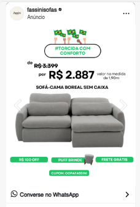

01
Campanhas voltadas a conversas
As duas campanhas ativas têm como objetivo iniciar conversas por mensagem. O principal resultado acompanhado é o número e o custo dessas conversas.
Este documento apresenta o cenário atual das campanhas, os pontos que podem ser melhorados e uma proposta inicial para começar a medir e testar vendas na loja virtual.

As campanhas atuais foram organizadas para gerar conversas no WhatsApp. Para avaliar vendas realizadas no e-commerce, é necessário preparar a medição do site e iniciar um teste específico para compras.
As duas campanhas ativas têm como objetivo iniciar conversas por mensagem. O principal resultado acompanhado é o número e o custo dessas conversas.
O pixel não está instalado ou validado no site e os eventos disponíveis aparecem zerados. Assim, não é possível associar com segurança os anúncios às compras concluídas.
Ainda não há relatórios de vendas por canal, ticket médio, pedidos pagos, cancelamentos ou devoluções para comparar com os dados das campanhas.
Uma campanha direcionada à compra no site pode ser testada em paralelo, com verba definida para esse objetivo e análise dos pedidos confirmados pela loja.
Os resultados abaixo mostram geração de conversas e entrega dos anúncios. Eles não informam quantas conversas se transformaram em vendas pagas.
Alcance representa contas alcançadas conforme o relatório da plataforma. Os resultados de conversa não substituem a confirmação de vendas e pagamentos na loja.
Este é o retrato das campanhas de WhatsApp identificado a partir das informações disponíveis.
| Item | Cenário identificado | O que revisar |
|---|---|---|
| Campanhas | Duas campanhas ativas com objetivo de iniciar conversas por mensagem. | Manter a frente de WhatsApp separada da nova frente de vendas pelo site. |
| Otimização | Estratégia de lance para buscar o maior volume. | Para o e-commerce, testar otimização para compras depois que a loja registrar corretamente os pedidos. |
| Orçamento informado | R$ 200 por dia em cada campanha. | Definir uma verba própria para o teste do e-commerce, sem misturar os resultados com WhatsApp. |
| Público e idade | Idade mínima de 23 anos e públicos de interação listados na conta. | Revisar o público com base nos dados reais de compradores e excluir compradores quando houver uma lista confiável. |
| Região | A área comercial informada é Sudeste, mas a lista geográfica atual está concentrada em localidades do Rio de Janeiro. | Conferir a cobertura de São Paulo, Minas Gerais e Espírito Santo e ajustar as áreas às condições reais de entrega. |
| Posicionamentos | Anúncios somente no Instagram: feed, stories e reels. | Testar a distribuição em outros posicionamentos disponíveis e comparar o resultado, mantendo formatos adequados para cada espaço. |
| Anúncios | Imagens de linhas de sofás com preço e direcionamento direto ao WhatsApp. | Testar também vídeos, detalhes do produto, medidas, conforto, diferenciais, entrega e chamadas para compra no site. |
| Horários | Campanhas de WhatsApp pausadas na sexta e reativadas na segunda, pois a equipe não atende no fim de semana. | Separar a decisão de horário do WhatsApp da campanha de compra no site, que pode receber pedidos fora do horário de atendimento. |
As ações abaixo priorizam o que precisa estar organizado para medir vendas e tomar decisões melhores.
Sem essa informação, a campanha não consegue aprender quais anúncios, públicos e produtos ajudam a gerar pedidos. A equipe também não consegue comparar os resultados do anúncio com as vendas reais do e-commerce.
Como a atividade do site não está sendo registrada, não há uma base confirmada de pessoas que visualizaram produtos, iniciaram uma compra ou compraram. Os públicos de interação social listados podem ser úteis, mas não substituem o remarketing de quem visitou a loja.
Não há registro centralizado que mostre se uma conversa virou venda, qual foi o produto, a origem do contato ou a situação do pagamento.
Sem ticket médio, volume de pedidos e margem, não é possível estabelecer quanto a empresa pode investir para conquistar uma venda sem comprometer o resultado do negócio.
O cliente pode desistir se descobrir o custo ou a condição de entrega somente depois de clicar no anúncio ou avançar na compra.
As imagens atuais mostram o sofá e o preço. Para uma compra de maior valor, informações adicionais podem ajudar o consumidor a avaliar o produto.
A configuração deve acompanhar o percurso do consumidor desde a visita até a compra. Os nomes abaixo são os registros que serão usados para identificar cada etapa.
Não há, nas referências públicas consultadas, uma base suficientemente confiável e específica para prever o custo por compra de sofás no e-commerce brasileiro.
Uma compilação de benchmarks de e-commerce apresenta CPC de link próximo a R$ 2,17 e taxa de conversão geral próxima de 1,6%. São referências amplas, não exclusivas de móveis ou sofás.
Esses dados não garantem o custo real dos cliques, a quantidade de visitas que chega ao site nem quantas pessoas vão comprar. Preço, frete, prazo, margem e experiência da loja influenciam o resultado.
Após a medição, a meta deverá ser ajustada com base em visitas, pedidos pagos, valor das compras e margem de contribuição dos produtos.
O primeiro mês deve ser tratado como uma etapa de implantação, validação e aprendizado — não como uma promessa de quantidade de pedidos ou faturamento.
Equivale a aproximadamente R$ 100 a R$ 150 por dia, considerando 30 dias de campanha.
Estimativa aproximada de cliques se o custo por clique ficasse próximo à referência geral de R$ 2,17.
Esses dados ajudam a entender o valor de cada venda e a decidir se o investimento em anúncios está contribuindo para um resultado saudável.
| Informação | Por que precisamos dela | Frequência sugerida |
|---|---|---|
| Pedidos pagos e faturamento por mês | Comparar as campanhas com vendas concluídas e receita real. | Mensal |
| Vendas por canal: site, WhatsApp e outros | Entender de onde vêm os pedidos e evitar atribuir a venda ao canal errado. | Mensal |
| Ticket médio e quantidade de pedidos | Estabelecer uma referência comercial e acompanhar mudanças no volume. | Mensal |
| Produto, região e valor de cada pedido | Identificar quais modelos e áreas geram mais oportunidades. | Por pedido |
| Custos do produto e margem de contribuição | Definir o custo máximo de aquisição que o negócio pode suportar. | Por produto, revisar quando mudar |
| Frete, taxas de pagamento e parcelamento | Considerar os custos variáveis que afetam o resultado de cada venda. | Por região e condição |
| Pedidos cancelados, devolvidos ou estornados | Separar pedidos registrados de vendas que permaneceram válidas. | Mensal |
| Vendas originadas em conversas | Medir a contribuição do WhatsApp e melhorar o atendimento comercial. | Por pedido |
| Estoque e prazo de entrega por região | Direcionar anúncios apenas para produtos e áreas com atendimento confirmado. | Atualizar quando houver mudanças |
As etapas podem avançar em sequência. A campanha de vendas depende da validação da medição e das condições de compra na loja.
Alinhar a instalação do pixel e, se disponível, a integração de servidor. Testar as etapas do carrinho e a compra concluída.
Conferir preço, frete, prazo, pagamento, estoque e páginas dos produtos. Preparar anúncios com informações claras e formatos variados.
Criar uma campanha separada para compra no site, com produtos e regiões confirmados e verba de teste aprovada.
Comparar os dados da plataforma com os pedidos da loja, avaliar o percurso de compra e recomendar os próximos ajustes.
O trabalho será direcionado à preparação e ao acompanhamento inicial das campanhas de vendas pelo site.
No início, a prioridade é confirmar que a medição funciona e localizar em que etapa as pessoas avançam ou desistem.
Visitas à loja, visualizações de produtos e buscas realizadas.
Adições ao carrinho e inícios da finalização do pedido.
Compras registradas, pedidos pagos, valor vendido e confirmação nos dados da loja.
Custo por compra, cancelamentos, devoluções e desempenho por produto e região.
A Fassini Sofás já tem campanhas que geram conversas. A oportunidade agora é preparar o site para registrar as compras, iniciar um teste de vendas com verba própria e avaliar os resultados junto aos pedidos reais. Com dados de vendas e margem, será possível definir metas mais realistas e decidir com mais segurança como evoluir o investimento.